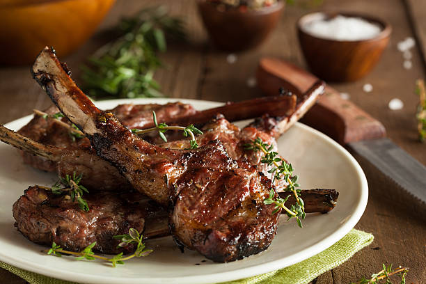

Grilled Lambchops

Spring is definitely the season for grilled lamb chops. If you’re like many in my family, you have a preconceived notion that lamb has too strong of a flavor. The real truth is that if most people had a taste of a good, properly cooked lamb chop, they would change their tune. I was one of those people that swore I wouldn’t like lamb, until I had the most delicious, tender and perfectly seasoned lamb chop. Since that moment, I’ve been hooked!
Ingredients
- 2 pounds of lambchops
- 4 cloves of garlic
- 1 tablespoon fresh rosemary chopped
- 1 1/4 teaspoon kosher salt
- 1/2 black pepper
- 1/4 cup olive oil
- 1. Combine the garlic, rosemary, salt, pepper, lemon zest and olive oil in a measuring cup.
- 2.Pour the marinade over the lamb chops, making sure to flip them over to cover them completely. Cover and marinate the chops in the fridge for as little as 1 hour, or as long as overnight.
- Grill the lamb chops on medium heat for 7-10 minutes, or until the internal temperature reads 135 degrees F.
- allow the lamb chops to rest on a plate covered with alumnium foil for 5 minutes before serving.